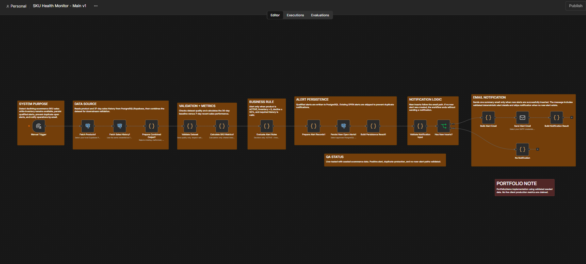
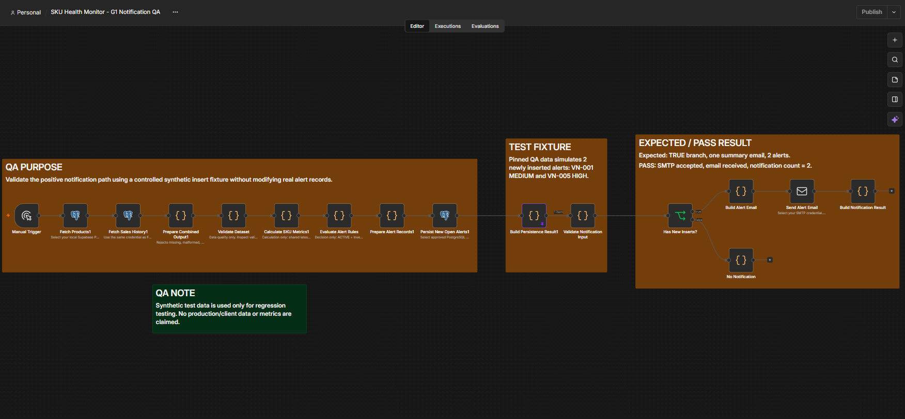
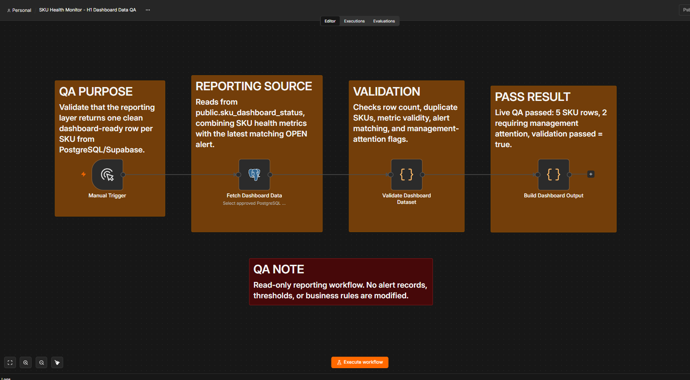
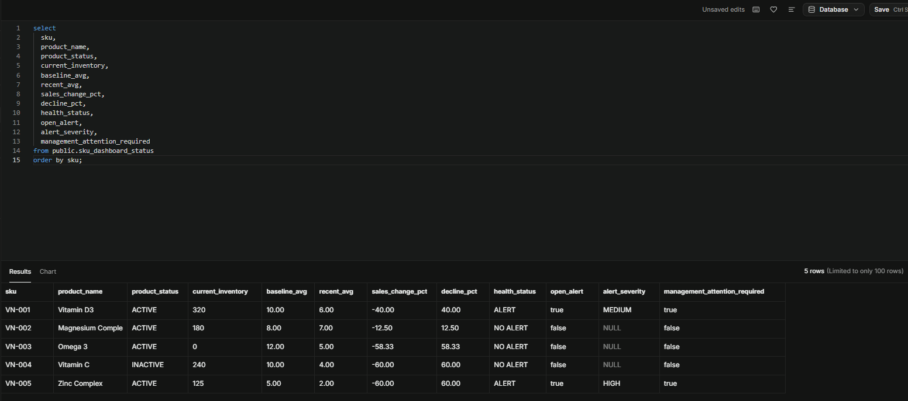
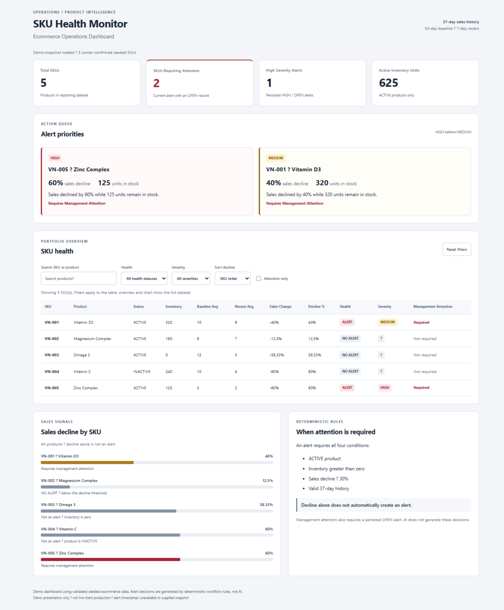

SKU Health Monitor
Portfolio/demo implementation using seeded/synthetic ecommerce data — no live client production metrics.
Business problem
Declining sales can leave available inventory unnoticed. Operations needs validated, explainable signals for management attention.
Implemented solution
An ecommerce monitoring system reads product and sales data, validates history, calculates metrics, applies deterministic alert rules, persists qualified alerts, prevents duplicate OPEN alerts and repeat notifications, sends operational email, and prepares management dashboard data.
System / technology stack
n8n · PostgreSQL/Supabase · SQL · Deterministic rules · Alert persistence · SMTP · Operations reporting · Browser dashboard
System Screenshots & QA Proof
Actual workflow and reporting screenshots from the portfolio build. Open any card to inspect the original full-size image in a new tab.

Main n8n Workflow
The clean Main v1 path connects data retrieval, validation, metrics, deterministic rules, alert persistence, duplicate prevention, and conditional email.
View full screenshot
Notification QA
Controlled synthetic positive-path test: two qualifying alerts, one summary email, SMTP acceptance and email receipt confirmed.
View full screenshot
Dashboard Data QA
Read-only reporting QA passed with five SKU rows and two requiring management attention. Alert records and business rules are unchanged.
View full screenshot
Supabase Reporting
The PostgreSQL/Supabase reporting view returns one row per SKU with sales metrics, health status, the latest matching OPEN alert, and management-attention flags.
View full screenshot
Visual Operations Dashboard
A validated demo snapshot makes priorities easier to review: five SKUs, two requiring attention, searchable filters, decline bars, and clear rule context.
Demo data only — not a live client production feed.
View full screenshotWhat was built
- Product and sales retrieval, dataset validation, and SKU metric calculation
- Alert decisions: ACTIVE product, inventory greater than zero, sales decline at least 30%, and valid 37-day history
- Qualified alert persistence and duplicate OPEN-alert prevention
- Conditional operational email notification
- SQL reporting layer and browser dashboard in demo mode
QA / validation evidence
- 5 seeded SKUs and 185 daily sales records
- 37-day history per SKU; 2 management-attention alerts detected
- Duplicate OPEN-alert prevention validated
- SMTP notification path live-tested
- PostgreSQL/Supabase reporting layer live-tested
- Browser dashboard visual QA passed
These validation statements are Owner-confirmed project context. The full case-study PDF presents the system architecture, visual proof, and QA scope using seeded/synthetic data.
Scope and limitations
The dashboard currently runs in demo mode using validated seeded data. Reporting was live-tested against PostgreSQL/Supabase. G2 AI management brief is implemented and offline-tested; live API validation has not been completed because API credits were unavailable. Deterministic business rules generate alerts; AI is not the decision-maker.
Documentation & evidence
Portfolio/demo implementation. The full case-study PDF is linked above. Technical implementation documentation and additional QA evidence are available on request.